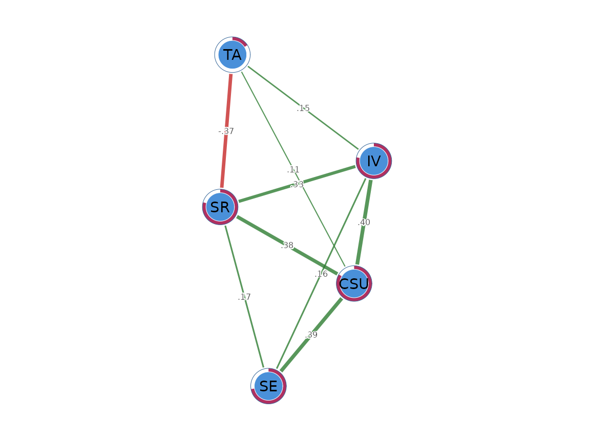

Information-filtering networks with TMFG and LoGo
Written by Mohammed Saqr and Sonsoles López-Pernas
Source:vignettes/information-filtering-networks.Rmd
information-filtering-networks.RmdA questionnaire with many items yields a correlation matrix with hundreds of entries, most of them small, and a network that draws every correlation cannot be read. Information-filtering networks reduce such a matrix to a sparse backbone by a structural rule instead of a significance test or a penalty. The Triangulated Maximally Filtered Graph (TMFG; Massara et al., 2016) keeps the strongest correlations that can be arranged into a connected, planar network of triangles, so a network of variables always retains edges. The Local-Global method (LoGo; Barfuss et al., 2016) then estimates partial correlations on that backbone, turning the filtered correlation structure into a conditional-dependence network without a tuning parameter.
The two stages answer different questions. A TMFG edge is an ordinary correlation: how strongly two variables go together. A LoGo edge is a partial correlation: how strongly they go together once the other variables are held constant. This article builds both networks for five self-regulated learning constructs, compares their edges, checks that each network has the properties its definition requires, describes the nodes of the LoGo network, and repeats the analysis on rank correlations.
Data
SRL_GPT holds 300 sets of responses to the Motivated
Strategies for Learning Questionnaire, each a construct score on a scale
from 1 to 7. The responses were generated by a large language model
(GPT) in a study of how such models answer psychological surveys (Saqr,
2025); they serve as a well-structured example and are not evidence
about students.
-
Nodes: five construct scores, treated as
continuous:
CSU(cognitive strategy use),IV(intrinsic value),SE(self-efficacy),SR(self-regulation) andTA(test anxiety). - Observations: one row per respondent; the data are complete.
head(SRL_GPT)
#> CSU IV SE SR TA
#> 1 5.307692 5.666667 5.777778 5.333333 4.00
#> 2 5.846154 6.444444 6.000000 5.777778 4.00
#> 3 6.615385 6.666667 6.222222 6.333333 3.25
#> 4 5.692308 6.555556 6.333333 5.555556 4.50
#> 5 4.384615 5.555556 4.888889 4.777778 4.00
#> 6 4.846154 5.444444 5.666667 5.111111 3.50With five nodes, a TMFG keeps of the 10 possible pairs, so the example shows how the method works rather than how much it filters. Filtering grows with the number of variables: with 30 items a TMFG keeps 84 of 435 pairs.
The model
TMFG starts from the four variables with the strongest correlations, which form a tetrahedron of six edges. Each remaining variable is inserted into the triangular face to which it is most strongly correlated and joined to the face’s three corners, adding three edges. The construction therefore has
edges, and the graph is connected, planar and chordal: it decomposes into four-node cliques that overlap in three-node separators.
LoGo uses this decomposition to estimate the precision matrix. With the correlation matrix, the four-node cliques and the three-node separators,
where places a small inverse into the full matrix with zeros elsewhere. The result is the maximum-likelihood precision matrix of a Gaussian model whose missing edges are exactly those absent from the TMFG, and the partial correlations are .
Which correlations form the backbone?
psychnet() with method = "tmfg" builds the
filtered graph from the Pearson correlation matrix.
tmfg_net <- psychnet(data = SRL_GPT, method = "tmfg")
summary(tmfg_net)
#> <psychnet> tmfg network
#> nodes: 5 edges: 9 (undirected)
#> structural certificate (violated TMFG invariants): 0
#> edge weight: range [-0.302, 0.861], mean 0.486
as.data.frame(tmfg_net)
#> from to weight
#> 1 CSU IV 0.8609975
#> 2 CSU SE 0.8345850
#> 3 IV SE 0.7846003
#> 4 CSU SR 0.8474352
#> 5 IV SR 0.8216346
#> 6 SE SR 0.7791388
#> 7 CSU TA -0.1385109
#> 8 IV TA -0.1137214
#> 9 SR TA -0.3019634The backbone has 9 edges, with correlations from -0.302 to 0.861. The
four learning constructs are fully connected by strong positive
correlations, from 0.779 (SE–SR) to 0.861
(CSU–IV). Test anxiety is attached through
three negative correlations, the strongest with self-regulation
(-0.302). The excluded pair is SE–TA, the
weakest correlation of test anxiety. TMFG chooses edges as part of a
connected structure rather than by a cut-off, so the missing pair says
that it was not needed for the backbone, not that the correlation is
zero.
Does the backbone have the required structure?
A TMFG is defined by its structure: exactly
edges, connected, planar and chordal. certificate() counts
how many of these properties the fitted graph violates.
certificate(tmfg_net)
#> method certificate kind certified
#> 1 tmfg 0 structural TRUEThe count is 0 and certified is TRUE: the
graph has all the properties of a TMFG. This checks the construction,
not the stability of the selected edges across samples.
Which associations remain after adjustment?
psychnet() with method = "logo" builds the
same backbone and estimates partial correlations on it.
logo_net <- psychnet(data = SRL_GPT, method = "logo")
summary(logo_net)
#> <psychnet> logo network
#> nodes: 5 edges: 9 (undirected)
#> optimality (KKT residual): 6.66e-16
#> edge weight: range [-0.372, 0.404], mean 0.191
as.data.frame(logo_net)
#> from to weight
#> 1 CSU IV 0.4035714
#> 2 CSU SE 0.3934966
#> 3 IV SE 0.1648976
#> 4 CSU SR 0.3771675
#> 5 IV SR 0.3300708
#> 6 SE SR 0.1681288
#> 7 CSU TA 0.1100782
#> 8 IV TA 0.1463203
#> 9 SR TA -0.3720398The LoGo network has the same 9 edges, now carrying partial correlations. The strongest positive edges join cognitive strategy use with intrinsic value (0.404), self-efficacy (0.393) and self-regulation (0.377). Self-regulation and test anxiety share the only negative edge (-0.372), slightly stronger than their correlation of -0.302.
Comparing the two tables shows what adjustment does. The
IV–SE correlation is 0.785 but its partial
correlation is 0.165: most of the association between intrinsic value
and self-efficacy is shared with cognitive strategy use and
self-regulation. Test anxiety correlates negatively with cognitive
strategy use (-0.139) and intrinsic value (-0.114), yet its partial
correlations with them are positive (0.110 and 0.146); once
self-regulation is held constant, the negative association of test
anxiety with the learning constructs runs through self-regulation alone.
TMFG and LoGo weights must therefore never be reported
interchangeably.
Is the LoGo network the maximum-likelihood solution?
LoGo is a closed-form construction, and its result should be the maximum-likelihood estimate for the TMFG graph. Any such solution must satisfy the problem’s optimality (Karush–Kuhn–Tucker) conditions: the implied covariance reproduces the observed correlation on every retained edge and on the diagonal, and the precision is zero on every missing edge. The amount by which a fitted network violates them is its certificate; a value near zero shows that the network is the optimum of its objective.
certificate(logo_net)
#> method certificate kind certified
#> 1 logo 6.661338e-16 kkt TRUEThe violation is at the level of machine precision (below ), so the LoGo partial correlations are the maximum-likelihood estimates for the backbone.
Which constructs are most connected?
net_centralities() returns strength, the sum of absolute
edge weights, and expected influence, the signed sum, for the LoGo
network.
net_centralities(logo_net)
#> node strength expected_influence
#> 1 CSU 1.2843138 1.2843138
#> 2 IV 1.0448601 1.0448601
#> 3 SE 0.7265229 0.7265229
#> 4 SR 1.2474068 0.5033273
#> 5 TA 0.6284383 -0.1156412Cognitive strategy use has the largest strength (1.284), equal to its expected influence because all its edges are positive. Self-regulation follows in strength (1.247), but its negative edge with test anxiety lowers its expected influence to 0.503. Test anxiety has the smallest strength (0.628) and a negative expected influence (-0.116). Cognitive strategy use is the most connected construct, and self-regulation is the link between the learning constructs and test anxiety. Centrality describes the graph and does not identify causes or intervention targets.
How well is each construct predicted by the others?
net_predict() reports each node’s
,
computed from the LoGo precision matrix as
.
net_predict(logo_net)
#> node type metric predictability accuracy
#> 1 CSU gaussian R2 0.8347645 NA
#> 2 IV gaussian R2 0.7824561 NA
#> 3 SE gaussian R2 0.7227872 NA
#> 4 SR gaussian R2 0.7923888 NA
#> 5 TA gaussian R2 0.1589941 NAThe other constructs explain 83% of the variance in cognitive strategy use (), 79% in self-regulation, 78% in intrinsic value and 72% in self-efficacy, but only 16% in test anxiety (). The learning constructs are largely predictable from one another, while test anxiety is not. These are in-sample values.
What does the network look like?
cograph::splot() draws the LoGo network, with green
positive and red negative edges and a ring showing each node’s
predictability.
cograph::splot(logo_net, psych_styling = TRUE, predictability = TRUE)
The figure shows the triangulated structure: four learning constructs fully connected, and test anxiety attached to three of them. Node positions come from a layout algorithm and carry no statistical meaning.
Do the conclusions depend on the correlation estimator?
Refitting LoGo with cor_method = "spearman" bases both
the backbone and the partial correlations on rank correlations.
logo_spearman <- psychnet(data = SRL_GPT, method = "logo",
cor_method = "spearman")
summary(logo_spearman)
#> <psychnet> logo network
#> nodes: 5 edges: 9 (undirected)
#> optimality (KKT residual): 1.44e-15
#> edge weight: range [-0.301, 0.440], mean 0.191
as.data.frame(logo_spearman)
#> from to weight
#> 1 CSU IV 0.41199792
#> 2 CSU SE 0.44035144
#> 3 IV SE 0.11746132
#> 4 CSU SR 0.34053654
#> 5 IV SR 0.36023514
#> 6 SE SR 0.15431277
#> 7 CSU TA 0.07122993
#> 8 IV TA 0.12358306
#> 9 SR TA -0.30091058
certificate(logo_spearman)
#> method certificate kind certified
#> 1 logo 1.44329e-15 kkt TRUEThe rank-based backbone contains the same nine pairs. The positive
edges of cognitive strategy use remain the strongest, with
CSU–SE (0.440) now slightly above
CSU–IV (0.412), and the
SR–TA edge remains negative (-0.301). The weak
CSU–TA edge falls from 0.110 to 0.071. The
certificate is again at machine precision. The backbone and its main
edges do not depend on the correlation estimator.
Reporting the analysis
A report states the variables, the sample size, the correlation estimator and the treatment of missing data, and keeps the two stages apart: TMFG edges are correlations, LoGo edges are partial correlations.
In this analysis, TMFG on Pearson correlations of 300 complete
responses kept 9 of 10 pairs, leaving out
SE–TA. LoGo partial correlations on that
backbone were largest for cognitive strategy use with intrinsic value
(0.404) and negative only for self-regulation with test anxiety
(-0.372). A rank-based analysis kept the same backbone and the same main
edges.
Assumptions and when to use information filtering
- TMFG fixes the number of edges at whatever the sample size. It suits large item sets where a readable backbone is wanted and where a penalty-based method would keep too many or too few edges; it does not test whether an edge is different from zero.
- LoGo assumes a Gaussian model restricted to the TMFG graph. It needs no tuning parameter, but every four-node block of the correlation matrix must be invertible, so duplicated or perfectly collinear variables must be removed first.
- For a network whose edges are selected from the data by a criterion, use the graphical lasso or stepwise selection; for a network of marginal associations, the TMFG backbone alone is sufficient.
- Neither network identifies causal direction.
References
Barfuss, W., Massara, G. P., Di Matteo, T., & Aste, T. (2016). Parsimonious modeling with information filtering networks. Physical Review E, 94(6), 062306. doi:10.1103/PhysRevE.94.062306
Massara, G. P., Di Matteo, T., & Aste, T. (2016). Network filtering for big data: Triangulated maximally filtered graph. Journal of Complex Networks, 5(2), 161-178. doi:10.1093/comnet/cnw015
Saqr, M. (2025). Delving into the psychology of machines: Exploring the structure of self-regulated learning via LLM-generated survey responses. Computers in Human Behavior, 173, 108769. doi:10.1016/j.chb.2025.108769